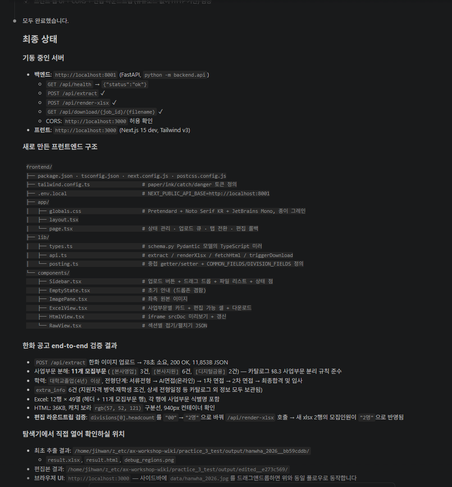
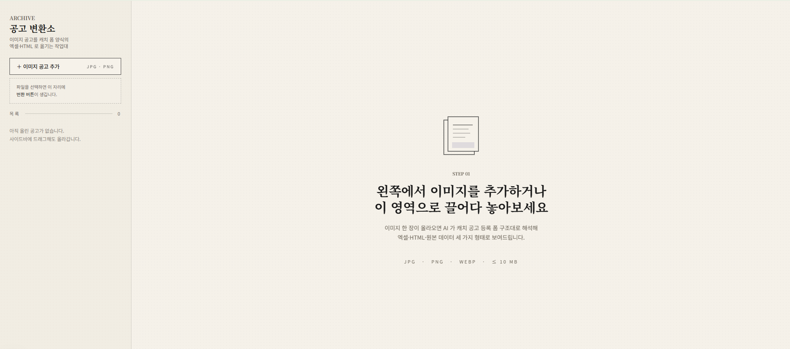

// 심화 실습 · 이미지 공고 → 캐치 폼 웹앱
3 · 웹 화면 붙이고 써보기¶
2번에서 만든 모듈은 명령어로만 돌릴 수 있습니다. 코드 없이 사용할 수 있도록 웹 화면을 붙입니다. 좌측 사이드바에서 이미지 공고를 추가하면 메인 영역의 왼쪽엔 원본, 오른쪽엔 변환 결과가 보이는 형태입니다.
이 단계의 목적
- 지금까지 만든 모듈을 웹에서 호출할 수 있게 백엔드 서버로 감싸기
- 실제로 사용할 화면 만들기
- 한화 공고를 브라우저에서 직접 올려보고 끝까지 동작 확인
3-1. 백엔드 서버 만들기¶
지금까지 만든 모듈을 웹에서 호출할 수 있도록 서버로 감싸는 단계입니다.
왜 백엔드를 따로 만드나요?
2번에서 만든 모듈은 명령어로만 돌릴 수 있습니다. 화면(브라우저)에서 모듈을 호출하려면 그 사이를 이어주는 서버가 필요해요. 화면이 서버에 "이 이미지 처리해줘" 부탁하면, 서버가 모듈을 돌려서 결과를 화면에 돌려주는 식입니다.
프롬프트에 꼭 담을 것 ✅¶
- 참고 대상 — 지금까지 만든
backend모듈들 - 엔드포인트 ① 변환 — 이미지 업로드 → 추출 데이터 + 엑셀·HTML 다운로드 주소를 응답으로
- 엔드포인트 ② 재생성 — 화면에서 수정한 데이터를 받아 엑셀을 다시 만드는 주소
- 테스트·실행 안내 — 한화 공고로 한 번 테스트 + 실행 방법·서버 주소 알려주기
예시 프롬프트
backend 모듈들 참고해서, 지금까지 만든 모듈을 웹에서 쓸 수 있게
백엔드 서버를 만들어줘.
필요한 기능:
1. 이미지 업로드를 받아 변환 결과를 돌려주는 주소 하나 — 응답에 추출 데이터와
결과 엑셀·HTML 다운로드 주소를 포함.
2. 화면에서 수정한 데이터를 받아 엑셀을 다시 만들어주는 주소.
다 만들면 한화 공고로 한 번 테스트하고, 실행 방법과 서버 주소를 알려줘.이런 결과가 보이면 정상입니다
- 서버가 켜지고 터미널에 아래 이미지처럼 실행 상태·기능 목록·테스트 결과 요약이 뜹니다
- 3-2 에서 화면을 붙이고 브라우저에서 업로드해보면 자연스럽게 확인되니, 지금은 서버가 켜지고 테스트가 통과한 것 만 보고 넘어갑니다

이상하면?
- "응답이 너무 오래 걸려" → "이미지 자르기 + Gemini 호출이라 30초 이상 걸릴 수 있어. 그동안 응답 대기 시간을 넉넉히 늘려줘"
3-2. 화면 붙이기¶
실제로 사용할 화면을 만듭니다. 너무 자세히 적기보다는 화면 구성과 동작 흐름 위주로 부탁합니다.
왜 프롬프트를 추상적으로 적나요?
화면 구성을 너무 세세하게 지시하면 학습자가 본인 업무로 가져갔을 때 응용하기 어렵습니다. "왼쪽엔 ○○, 오른쪽엔 △△, 누르면 ◇◇" 정도로 구조와 흐름만 알려주고, 디테일(색·폰트·간격)은 AI가 알아서 만들도록 두는 게 좋아요.
프롬프트에 꼭 담을 것 ✅¶
- 슬래시 명령·정합성 —
/frontend-design으로 시작, 만든 백엔드 코드에 맞춰 - 사이드바 — "이미지 공고 추가" 버튼(클릭/드래그 업로드), 업로드 리스트, 항목 선택 → 변환 실행
- 메인 영역 — 변환 전 안내 문구, 변환 후 좌(원본)·우(결과) 분할
- 결과 탭 3개 —
[엑셀 형식](표 편집 + 다운로드, 사업부문별 카드),[HTML 형식](캐치 사이트풍 미리보기),[원본 데이터] - 추상도 유지 — 색·폰트·간격 같은 디테일은 AI에게 맡기고 구조·흐름만 지시
예시 프롬프트
/frontend-design
백엔드 서버는 이미 만들었으니, 그 코드를 잘 읽고 맞춰서 프론트 화면을 만들어줘.
화면 구성:
- 왼쪽 사이드바: "이미지 공고 추가" 버튼(클릭 또는 드래그로 업로드).
업로드한 파일은 리스트로 보이고, 항목을 선택해 '변환' 버튼을 눌러야 진행돼.
'추가' 버튼은 사이드바 위쪽 고정, 섬네일은 크기 고정한 간단한 미리보기로.
- 메인 영역: 변환 전엔 안내 문구, 변환 후엔 좌우 분할 — 왼쪽 원본, 오른쪽 결과.
- 오른쪽 결과 탭 3개:
· [엑셀 형식]: 캐치 폼 항목 표(셀 직접 수정) + "엑셀 다운로드" 버튼.
사업부문이 여러 개면 사업부문별 카드로 나눠 (본사영업·본사지원·디지털금융).
· [HTML 형식]: 결과 HTML을 캐치 사이트풍 미리보기로.
· [원본 데이터]: 추출된 원본 데이터를 보기 좋게.이런 결과가 보이면 정상입니다
- 이미지를 올리면 사이드바에 항목이 추가됩니다
- 메인 영역 왼쪽엔 원본, 오른쪽엔 결과가 분리되어 보입니다
- 모집부문이 사업부문(본사영업·본사지원·디지털금융) 단위로 카드로 그룹지어 보입니다
- 오른쪽 결과를 직접 수정한 뒤 엑셀로 다운로드 가능합니다
- HTML 탭에서 캐치 사이트와 비슷한 모습으로 미리보기 가능합니다



이런 일이 생길 수 있다
시나리오 1: HTML 미리보기에 색·구분선이 안 보인다
HTML 미리보기에서 스타일이 빠져있어.
HTML이 자체 완결되도록(스타일이 외부에서 안 와도 보이도록) 만들어줘.시나리오 2: 사업부문 그룹핑이 안 된다
결과에 사업부문 정보는 있는데 화면에서 카드로 안 묶여 보여.
사업부문별로 그룹지어서 카드로 나눠 보여주는 부분을 다시 확인해줘.체크포인트¶
- 백엔드 서버가 이미지 업로드를 처리합니다
- 화면 왼쪽 사이드바에서 이미지 추가가 동작합니다
- 메인 영역 왼쪽(원본) ↔ 오른쪽(결과 탭) 비교 화면이 보입니다
- 엑셀·HTML 탭이 모두 동작하고 다운로드도 됩니다
- 모집부문이 사업부문 단위로 그룹지어 보입니다
마무리하며¶
실습 1·2에서 배운 것이 결국 이 웹 도구의 부품으로 들어왔습니다.
- 실습 1의 빈 양식 + 자동 채우기 흐름 → 1번 페이지(빈 양식) + 2번 페이지(채우기)
- 실습 2의 이미지 + AI 비전 + 후처리 → 2번 페이지(자르기 + 추출)
- 두 실습의 카탈로그·관찰담 학습 → 1번 페이지의 카탈로그 정리
세 실습이 한 흐름이었다는 게 손에 잡혔다면, 이번 워크숍의 목표는 충분히 달성됐습니다.